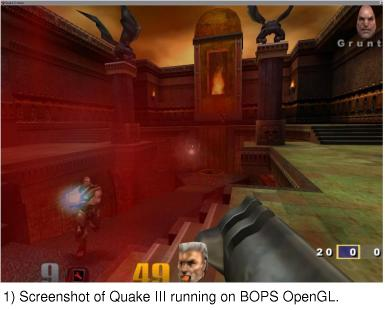

Resume
GitHub
LinkedIn
E-mail
|
My mission is to become part of an
intense software engineering team that will enable me to expand my
horizons, push my limits, and make a big impact.
- Member of a small team that develops "glue" software for process automation.
- Met with customers to troubleshoot, debug and fix any problems with their process automation solutions.
- Designed and developed a web based CRM development tool, for small to medium sized business with webservice, database, and legacy backend support.
- Member of a team that developed Linux and Solaris applications to facilitate mobile messaging (SMS), and related services.
- Developed next generation of subscriber database to manage 100 million subscribers in MySQL Cluster.
- Enhance perl scripts used for automated regression test in order to improve robustness and code coverage.
-
Member of a 10-person team that is responsible for designing, developing,
testing, documenting and maintaining a number of real time operating
systems for a variety of embedded processors in C, Intel and ARM assembly;
including: Tekelec proprietary RTOS, VxWorks each running on systems from
the Intel 286 to the P4 Xeon, and Arm based IXP1250, IXP2350, and EP9312.
-
Implemented a number of low level modules;
including: exception handlers/NMI, ISRs, SMBus interface, bootloader code,
in system programming for devices such as FPGAs, flash chips, and CPLDs,
and device drivers for 24 port Ethernet switch.
-
Designed a number of high-level modules; including:
application error reporting interface, live system fail-safe
software upgrade, thermal management module (patent pending),
Inter-processor communication module, Multiprocessor File I/O device
driver.
-
Developed and maintained a core infrastructure test application;
this test application consisted of a server running on embedded vxworks
systems, and a MFC GUI client which communicates to the server over
Ethernet.
-
Collaborated with hardware team during board bring up for many new products.
-
Troubleshoot, fix bugs, and develop enhancements in many different areas of the OS code
base in both Rational ClearCase, and PVCS environments.
-
Part
of a team that developed and maintained a
multi-platform real time embedded DSP OS. My responsibilities included
RTOS design, host API design/development, compiler development, and system
verification.
-
Designed, developed, tested, and maintained 2D/3D applications on the BOPS DSP core
in assembly, such as OpenGL 3D lighting model, and a 3D rasterization
engine with perspective correct texture mapping.
-
Actively participated in many other projects through out the company including:
coding standards committee, documentation standards committee, swat team,
and the prototype team.
-
Part of a team that was responsible for developing, maintaining, and verifying the
BOPS DSP simulator, MFC debugger, GNU assembler, and other GNU utilities
targeted for the BOPS platform.
-
Helped develop and maintain directed test case generators in Tcl, to verify the
BOPS DSP simulator, and RTL.
- Beagle RC
-
Using a joystick on a host PC I wrote a client server application,
that controls servos connected to a beagle board over wireless ethernet.
-
The beagle board is an embedded development platform that runs Angstrom embedded linux.
-
To drive the servos I wrote a linux device driver
which implements pulse width modulation in software.
- PlayerPiano
-
Software running on a gumstix overo board control the movements of the steppers/servos through
an FPGA interface.
- Stepper motors move servos up and down a small homemade gantry.
- When the servo is in position it will then strike a key on a paino.
- North Carolina State University, Raleigh, NC (1996-2000)
- Bachelor of Science in Computer Science.
- Concentration in 3D/Stereo Graphics programming
-
US Patent pendingMethods, systems and computer program products for thermal management of a processor associated with a network interface.
-
Publication
MacAllister, David F; Desjardins, Christopher J. "Geometric image
processing of stereo pairs." Proc. SPIE Vol. 4297, p. 317-327
-
Avid programmer, world traveler, motorcycle enthusiasts, mountain biker, and scuba diver.
At Tekelec I have had the chance to become very involved in the
development of low-level software for the following platforms:
- VxWorks Kernel, and BSP development
- Proprietary OSs running on Arm based IXP1250, IXP2350, and EP9312 processors.
- Proprietary OSs running on many different x86 processors
All of the above platforms ran on multi-processor distributed memory blades, which were part
of a larger distributed real time message passing system that implemented the Tekelec Eagle 5
platform which ran SS7 and related products such as SCCP, GTT, LNP, etc...
- In system device programming (FPGA, CPLD, and Firmware hub)
- ISR handlers for Thermal conditions, battery voltages, clocks, and other Tekelec specific events
- SMBus interface routines
- CPU Thermal monitor and management (patent pending)
- Application download
- Failsafe file system on top of dosFs
- Error handler/reporting application
- Custom NMI handler
- Boot loader
On all of the above projects (except the last two) I was the lead or sole engineer.
Because I played such a large role in the development of OS level code, I was the primary contact
for the hardware team during board bring up when software assistance was needed.
I was able to develop software for many ARM processors, some software modules I worked on included:
- CPU Interface code for Broadcom 5630 switch
- Application download
- Flash programming
- LED Controller
- Many other Tekelec specific modules
I was the sole engineer responsible for the Broadcom 5630 "light management interface", this was a major
software development effort and a considerable management risk because this was the first
time Tekelec had ever used a Broadcom switch in any product. However this project became
widely heralded because it went so smoothly, and the code has proven to be quite stable.
I also took a lead role in the design and development of the next generation of tekelec products which
will be based on a dual core Intel platform. Because VxWorks does not fully support SMP we decided to
come up with our own VxWorks based multiprocessor solution. To do this we compile two VxWorks kernels
and run one kernel on each core with a home grown shared memory inter-processor communication subsystem.
My responsibilities in this effort included:
- Initial board bring up
- Software architecture
- Designed and developed shared memory communication subsystem
- Designed and developed generic interrupt driven (IPI) inter-processor message passing mechanism
- File I/O device driver which allowes both cores to share the same flash file system
Another development effort that I got to lead was a system test tool for the Tekelec signal transfer point (STP)
which enables Tekelc personnel to stress the backbone of the STP in a controlled fashion. The STP is basically
a large distributed multiprocessor blade system, where each blade in the STP has two processors. One processor
is used for communication with other cards in the system, the second processor is used to run the application
designed for that blade. One STP may contain blades with processors from the 286 all the way up to the latest
high speed Xeon and/or IXP processors. With this recent influx of powerful processors it has become very important
to verify that the communication backbone is capable of supporting the full gamut of Tekelec blades. Prior to my
start at Tekelec there was no way of thoroughly testing the communication backbone so I decided to take the initiative
to create such a test application.
The test appication consists of the following components:
- UDP socket based server which runs on both Linux and VxWorks
- C++ dynamic link library (dll) which provides the Windows client side socket API
- MFC GUI application which links with the dll and enables users to preform directed tests
- Command line application which also links with the dll and enables users to write automated test cases with a simple single pass scripting language
This test tool was recently released for internal Tekelec useage, and is scheduled to ship to customer sites around Q3 2007.
I participated in the development of a RTOS for an embedded DSP core
with a distributed memory architecture and many levels of parallelism.
The OS kernel was less than 700 words, but it had the ability to overlay code
and data, schedule multiple concurrent threads, respond to I/O interrupts
quickly, and it abstracted the DMA engine so the user did not have to
write complex DMA transactions by hand.
My primary responsibilities were to help design and develop the host
side component of the RTOS. The host component was basically an API that
a programmer could use to perform various functions such as, load modules
on to the DSP core, communicate with the DSP, interrupt the DSP, perform
I/O with the DSP, and schedule threads for execution. Due to the fact
that the RTOS was going to be used with many different host environments I also
developed a very low level general I/O API that I ported to every
host environment that BOPS supported (eCos, Windows, and Linux). This low
level API made it very easy to develop BOPS DSP applications (such as the RTOS)
that were targeted at more than one host system.
I also helped develop the tool used to compile the
binary image that was loaded onto the DSP core and executed. This tool
worked by reading all of the necessary data in the object files produced
from compiling the core software. Then it produced a binary image with
all of the data from the object files formated in the way the
DSP OS kernel expected.
As a side project I wrote a small interactive visualization application for this RTOS (screenshot 1).
It simply interpreted the binary image produced from the RTOS build tool
and displayed the memory regions in an OpenGL window. This was helpful
because the module memory regions were not relocatable, which meant that
in order to use memory most efficiently the programmer had to make sure that
there were few memory spaces between modules (i.e. no memory fragmentation). This visualization
tool showed the module layout in memory, and any fragmentation was easily identified.
The programmer could then change the module layout to minimize the fragmentation.
Below are some screenshots of 3D applications running on the BOPS DSP OpenGL

driver the Embedded Applications team developed.
They show our implementation of a highly optimized OpenGL driver running on
a DSP core with many levels of parallelism. We did this by developing a dynamic
link library that directed all OpenGL calls to the BOPS DSP core for processing,
once the core was done processing the results of each frame were returned to the
host computer where they were rasterized.
As a member of the Embedded Applications team I helped implement the

OpenGL driver for the BOPS DSP. I was primarily responsible for the OpenGL
lighting model (shown in screenshot 2a), but I also helped get Quake III (screenshot 1) running on
the BOPS OpenGL driver. Once Quake was running I was responsible for maintaining
it on new releases of the BOPS SDK, and BOPS API.
Screenshot 2a shows the OpenGL lighting application in action, screenshot 2b
shows the controls for all of the variables in the OpenGL lighting equation. I
developed this application to prove that BOPS could process all 8 of the lights
in the OpenGL spec. The 4 spheres in the top window danced around sinusoidally,
and the 8 lights acted according to the settings in the lower window. The
user could change any of the values in the control window and the OpenGL scene
would be updated immediately.
The beagle board is a development platform with a TI OMAP3530 processor
which is based on the ARM Cortex-A8. I wrote an embedded linux device driver and application which drives
servos from a remote PC over 802.11 with a joystick as the input device. One servo is connected to the X
axis (steering servo), and the other to the Y axis (throttle servo).
I wanted to try my hand at an HDL, so I decided to build a robot that can
play simple songs on the piano. This project runs on the following hardware:
The code for this project is hosted on github.
The idea here was to learn some VHDL, so I developed VHDL code (using quartus-II under linux)
to drive both stepper motors, and servos. I created four 16bit registers in the FPGA which
can be written from the gumstix overo ARM processor. Here is a high level over view of
how the whole system works:
- The ARM writes 8 gpios which are connected to input pins on the pluto-3 FPGA board.
- The ARM then writes a "clock" gpio to cause the FPGA to latch the input pins.
- Each register write is composed of the following three 8bit writes
- is the register address.
- is the low order byte of the data.
- is the high order byte of the data.
- There are four registers, one for each stepper and servo.
- Writes to a stepper register indicates how many steps to take relative to the current position.
- Writes to a servo register indicates the pulse width to drive to the servo.
When it is all done the stepper motors will push or pull the servos down a small
gantry system so that the servo can then strike the correct piano key.
The stepper motors are driven by the FPGA through the l293b H-Bridges from STMicroelectronics,
the FPGA is setup so that four output pins are connected to the four H-Bridge input pins.
Then the four H-Bridge output pins are connected to the stepper motors, I found that the
steppers I have require about 1amp of current to run, and the H-Bridges
are rated for 1amp max, so I used two H-Bridges hooked up in parallel to drive one
stepper motor which effectively doubles the current the H-Bridges can handle.
I also wrote code to program the FPGA from the gumstix overo, this makes the system
more user friendly because when the fpga is powered off it loses it's configuration.
There is a configurator/boot prom on the fpga board, but I didn't want to overwrite
the default configuration so I decided to write my own programming code instead.
For my next project I thought it would be cool to make a custom made
doorbell for my house. I used the following items for this project:
To get the system running just connect 8 outputs from the arduino to the 8 h-bridge inputs (two
h-bridges gives 8 inputs, and 8 outputs). Then connect one wire from each solenoid to ground,
and the other wire from each solenoid to an output from the h-bridges. At this point you can
control all solenoids from the arduino.
To get the solenoids to work as a result of a doorbell ring, you must install some kind of button.
On the duemilanove all of the I/Os are floating, that is ok for the solenoids, but
for the button input a pull-down resistor is needed.
Once the button and pull down resistor are installed, an interrupt can be connected to the input line
on a rising edge and when it fires you know someone has pushed the doorbell which means it is time to
play a tune.
|

{kind=link}
{kind=link}
{kind=link}
{kind=link}
{kind=link}